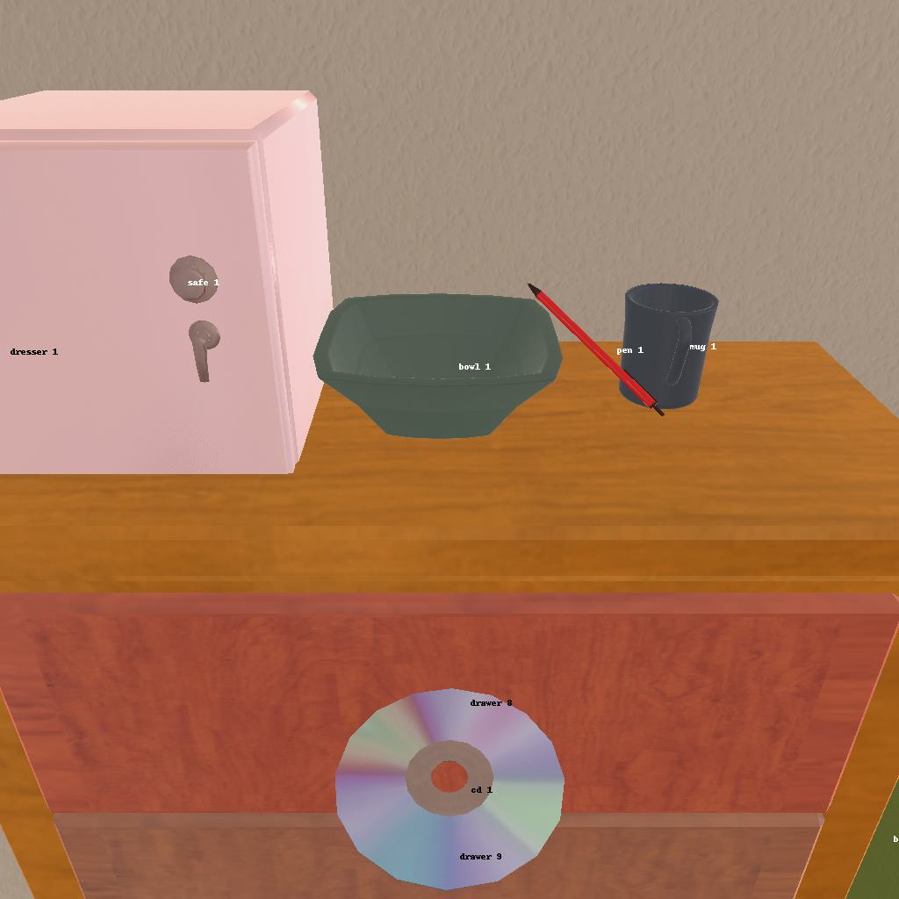

---------------------------------------------------------task: 6---------------------------------------------------------
--------------------------------------------------------------------------------------------------------------------------------------------------------------------
--------------------------------------------------------------------------------------------------------------------------------------------------------------------
Step:--------------------------------------------------------------------------18-------------------------------------------------------------------------------
----------------------------------------
VLM Prompt:
Image1:
Image2:
**Instruction**
1. Analyze the provided image to identify all visible household objects, focusing on those relevant to the task description "put some cd on safe."
2. Use the analysis of the image and the task hint "The agent must find an object of the desired type, pick it up, find the correct location to place it, and put it down there." to answer the question: what is the most reasonable action in the choices for the task description "put some cd on safe"?
4. Decide and write the answer using the template: The answer is: (i): , where i is the real number. If there is no desired object in the image, search every place based on **Initial Observation** to find the object. And if no one is exactly correct, choose a similar answer.
**Initial Observation**
You are in the middle of a room. Looking quickly around you, you can see bed (1-2), dresser (1), sidetable (1-2), drawer (1-11), desk (1), garbagecan (1), safe (1)
**Answer Choices**
(1): go to bed 1
(2): go to dresser 1
(3): go to bed 2
(4): go to sidetable 1
(5): go to drawer 1
(6): go to drawer 2
(7): go to sidetable 2
(8): go to drawer 3
(9): go to drawer 4
(10): go to desk 1
(11): go to garbagecan 1
(12): go to drawer 5
(13): go to drawer 6
(14): go to drawer 7
(15): go to drawer 8
(16): go to drawer 10
(17): go to drawer 11
(18): go to safe 1
(19): put cd 1 in/on drawer 9
(20): examine cd 1
(21): examine drawer 9
**Answer**
Let's think step by step by following the instructions.
----------------------------------------
----------------------------------------
Original Response:
First, we identify all visible household objects in the image. We can see a safe (labelled as safe 1), a dresser (labelled as dresser 1), a bowl (labelled as bowl 1), a pen (labelled as pen 1), a mug (labelled as mug 1), and a cd (labelled as cd 1) placed in an open drawer (labelled as drawer 9).
Given the task description "put some cd on safe," and considering the task hint, we need to find the cd and place it on the safe. In the image, we can see cd 1, which is the object of the desired type for this task.
The most reasonable action from the provided choices to complete the task "put some cd on safe" would be to first pick up the cd, which is in drawer 9, and then place it on top of the safe. The action of picking up the cd is not explicitly listed in the choices, but since the cd is already visible in the drawer, the closest action related to handling the cd would be to examine it.
However, the final goal is to put the cd on the safe, and since the cd is already visible and does not need to be searched for, the direct action related to placing the cd on the safe would be the correct choice.
Therefore, the answer is: (18): go to safe 1.
----------------------------------------
----------------------------------------
>>> Refine Original VLM Response and Get Pure Action: No action
----------------------------------------
-----------------------------------------------------------------
Running time: 14.287536144256592 seconds
Total Money: 2.8903299999999996
-----------------------------------------------------------------
-----------------------------------------------------------------
Text Observation:Nothing happens.
-----------------------------------------------------------------
UNSUCCEED